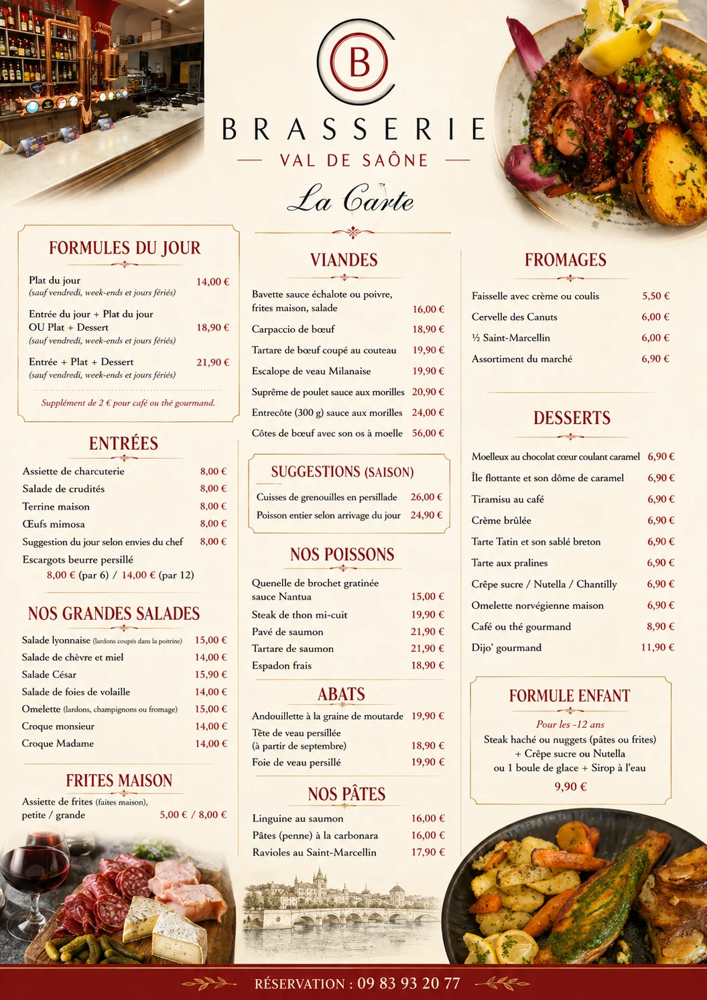
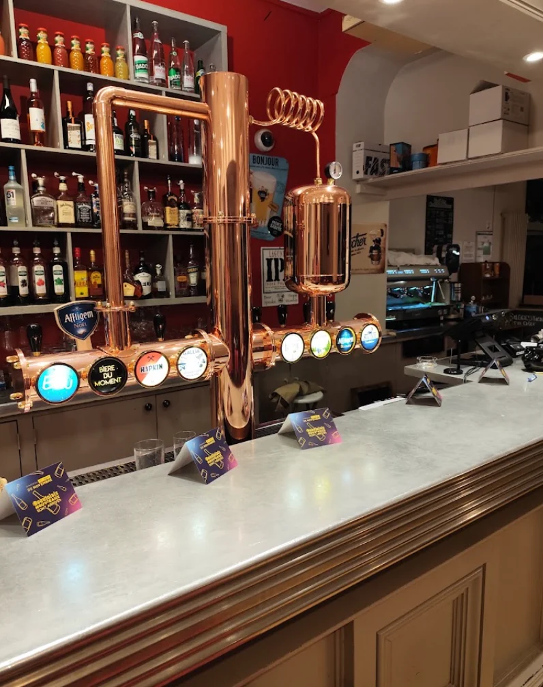
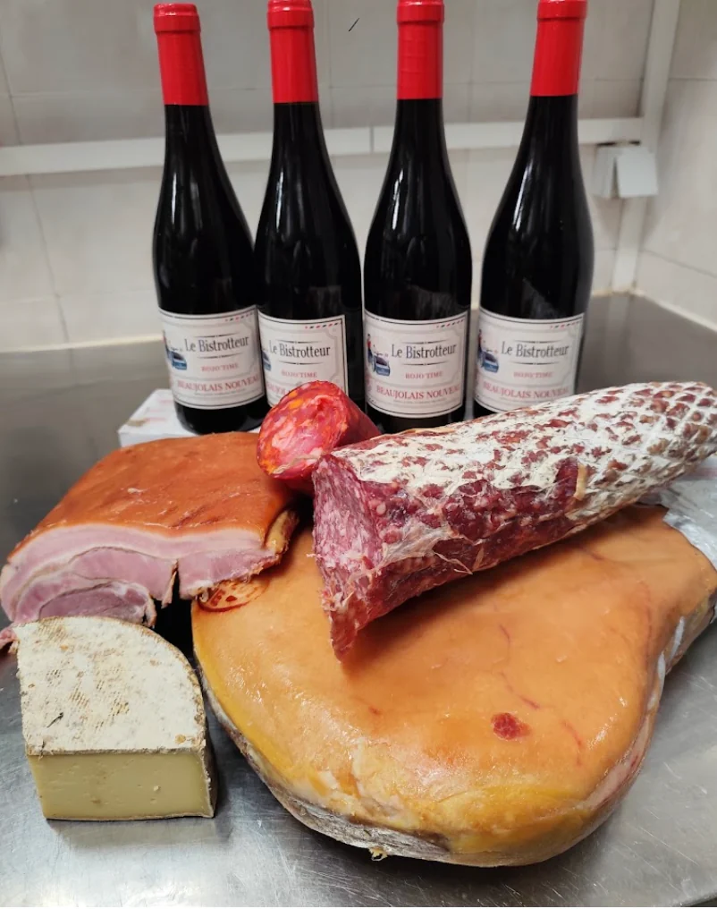
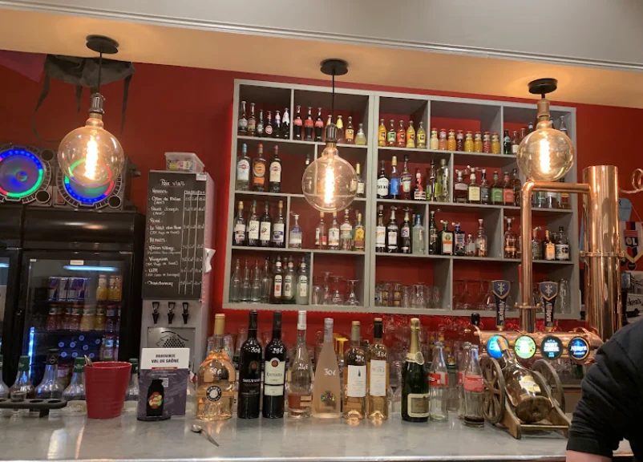
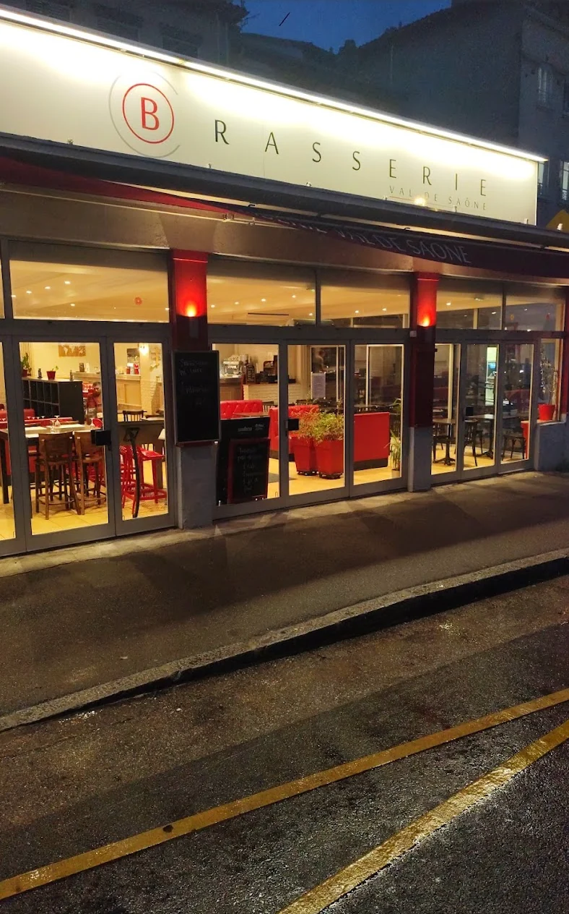

La brasserie
au goût du vrai.
Une carte généreuse entre grands classiques de brasserie, viandes, poissons, salades et desserts — à savourer au cœur de Neuville-sur-Saône.

L'esprit brasserie
Conviviale, généreuse,
ancrée à Neuville.
Derrière la façade lumineuse, un comptoir chaleureux, une sélection de boissons et une carte qui fait la part belle aux classiques de la cuisine française.


Ils en parlent
566 avis publiés sur Google
Les avis,
à faire défiler.
Quelques retours visibles sur la fiche Google de la brasserie. Faites glisser vers la droite pour les parcourir.
En images
Un comptoir qui vit,
des assiettes qui parlent.


Glissez pour explorer
Infos pratiques
À deux pas
de la Saône.
69250 Neuville-sur-Saône↗ Réservation09 83 93 20 77↗
Les horaires pouvant évoluer, consultez la fiche Google pour les horaires à jour.
Avant de venir
Quelques infos
utiles.
Pour une réservation ou une question sur la carte du jour, le plus simple reste de contacter directement la brasserie.
Appeler la brasserieComment réserver une table ? +
Vous pouvez joindre directement la Brasserie Val de Saône au 09 83 93 20 77. Pour les groupes ou une demande particulière, appeler en amont permet de vérifier les possibilités d’accueil.
Où se trouve la brasserie ? +
La brasserie se situe au 3 Quai Pasteur, 69250 Neuville-sur-Saône. Le bouton « Itinéraire » ouvre directement Google Maps avec l’adresse déjà renseignée.
Que trouve-t-on à la carte ? +
La carte regroupe des formules du jour, entrées, grandes salades, viandes, poissons, abats, pâtes, fromages et desserts. Des suggestions saisonnières complètent également la carte.
Y a-t-il une formule enfant ? +
Oui. Une formule est indiquée pour les moins de 12 ans, avec steak haché ou nuggets, accompagnement, dessert et sirop à l’eau, au tarif affiché de 9,90 €.
La livraison est-elle proposée ? +
Les informations fournies indiquent les repas sur place et un drive disponible, mais pas de service de livraison.
Comment connaître les horaires du jour ? +
Les horaires peuvent changer selon les jours. Pour éviter toute information périmée, consultez la fiche Google de la brasserie ou appelez directement avant votre déplacement.